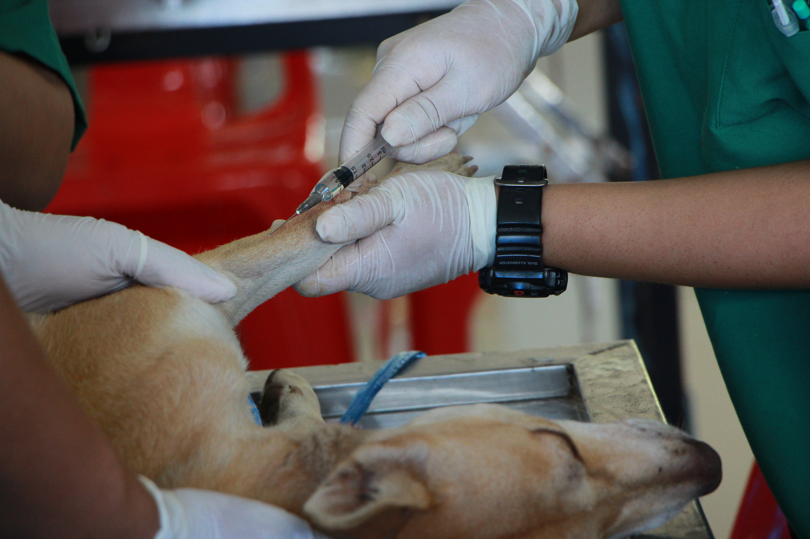

En Imagenología Veterinaria entendemos que detrás de cada estudio hay un miembro más de la familia. Por eso trabajamos con equipos de vanguardia y un enfoque humano, ofreciendo diagnósticos confiables que ayudan a los médicos veterinarios a tomar mejores decisiones.

Las ideas que nos guian a nosotros
Ofrecer diagnósticos ecográficos veterinarios precisos y oportunos, con tecnología de alta resolución y un trato cálido que respete el bienestar de cada paciente.
Ser el centro de referencia en diagnóstico por imagen veterinaria de la región, reconocido por su excelencia técnica y confianza.
Precisión, empatía, confianza, innovación y compromiso con la salud animal.
Los expertos que lo hacen posible

Especialista en Ecografía Veterinaria
Con más de 15 años de experiencia en el diagnóstico por imagen veterinaria.